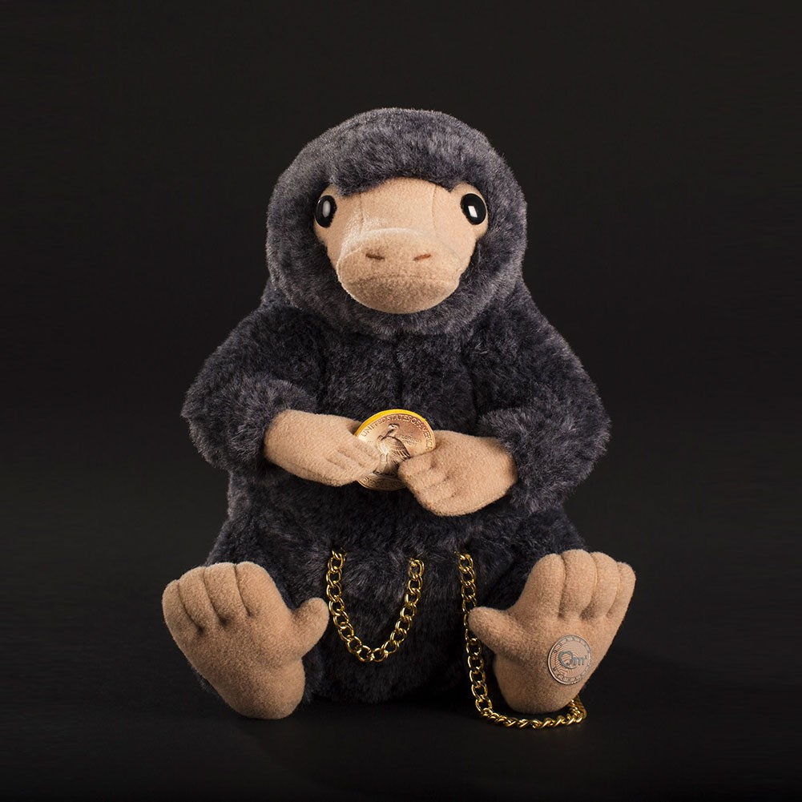
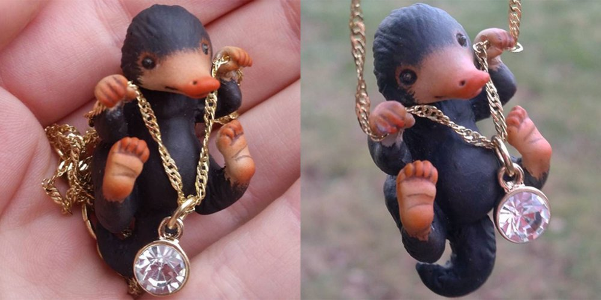
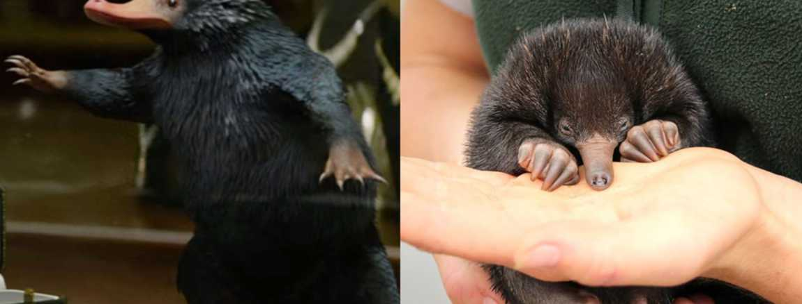

   Les Niffleurs sont étudiés lors d'un cours de soins aux créatures magiques de Rubeus Hagrid. Un Niffleur mordille le poignet de Pansy Parkinson pour essayer de lui arracher sa montre durant l'introduction du cours. Hagrid a prévu un Niffleur par élève. Il a enterré de l'or de farfadet dans un carré de terre. Il offre une récompense à l'élève qui en déterrera le plus grâce à son Niffleur. Les élèves apprécient ce cours, jugé très amusant. Harry Potter trouve son Niffleur affectueux. Le vainqueur est Ron Weasley, qui gagne une tablette de chocolat de chez Honeydukes. Lors d'une conversation entre Cedric Diggory et Harry, Cedric dit que Fleur Delacour pense que la troisième tâche du Tournoi des Trois Sorciers sera de découvrir un trésor caché dans des souterrains. Harry songe alors que ça serait très facile, qu'il lui suffirait d'emprunter un Niffleur à Hagrid